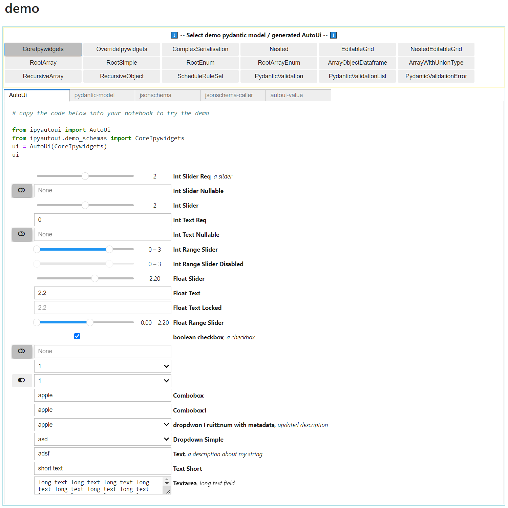

ipyautoui#


Documentation#
Try it online!#
launch  .
.
Installation#
pip install ipyautoui
mamba install ipyautoui -c conda-forge # mamba ... TODO: add to conda-forge.
conda install ipyautoui -c conda-forge # or conda ... TODO: add to conda-forge.
Intro#
A high-level wrapper library that sits on top of ipywidgets (and other ipy- widget libraries), pydantic and Jupyter rich display system to template and automate the creation of widget forms / user-interfaces. The core user-facing classes in this library are AutoUi, AutoVjsf and AutoDisplay:
from ipyautoui import AutoUi, AutoVjsf, AutoDisplay, demo
demo()
 ipyautoui aims to give you as much as possible out-the-box, whilst also supporting a simple workflow to extend and customise the interface to specific user requirements.
Summary of main features#
AutoUi#
from pydantic import BaseModel, Field
from ipyautoui import AutoUi
class LineGraph(BaseModel):
"""parameters to define a simple `y=m*x + c` line graph"""
title: str = Field(default='line equation', description='add chart title')
m: float = Field(default=2, description='gradient')
c: float = Field(default=5, ge=0, le=10, description='intercept')
x_range: tuple[int, int] = Field(
default=(0,5), ge=0, le=50, description='x-range for chart')
y_range: tuple[int, int] = Field(
default=(0,5), ge=0, le=50, description='y-range for chart')
ui = AutoUi(schema=LineGraph)
ui

ui.value # there is a `value` trait that is always kept in-sync with the widget input form
# {'title': 'line equation',
# 'm': 2,
# 'c': 5,
# 'x_range': (0, 5),
# 'y_range': (0, 5)}
# methods / stored values
ui.file(path) # file data to .json file
ui.value # input form value dict
ui.model # pydantic model (if given as input, AutoUi can be called from a jsonschema only also)
ui.schema # jsonschema
AutoUi.create_autoui_renderer # creates a json-serializable pointer
AutoUi.parse_file # init ui with data from .json file
AutoUi uses pydantic to define the schema of User Input form, and then infers the widget to use based on type and user-directives
ipyautoui.custom.provides useful widgets (e.g. iterable) that aren’t included within the core ipywidgets libraryipyautoui defines a best practice for creating and integrating custom widgets, and as default includes some widgets from other popular widget libraries (e.g. ipydatagrid, ipyfilechooser).
ipyautoui handles observing the values, and maintains a stateful and validated
.valueparameter for the whole user input form.AutoUi also allows the user to specify the usage of ipyvuetify and
note. this is the recommended approach for simple and generic input forms. Where custom UI objects are required these can be built using the ipyautoui core library.
AutoVjsf#
AutoVjsf works in exactly the same way as AutoUi , but instead of using ipywidgets to render the JSON schema it uses ipyvuetify and vuetify-jsonschema-form.
Should I use AutoUi or AutoVjsf?#
AutoVjsf#
The excellent documentation for vuetify-jsonschema-form can be used to create your schema. Anything possible in vjsf is therefore possible using AutoVjsf. This has a much more complete coverage of the json-schema specification, as well as the added benefit of out-the-box support of mobile applications. It falls down if you want to specify custom renderer objects.
Note
when you’re using pydantic to make the schema, “-” cannot be used field names, but vuetify-jsonschema-form requires them (e.g. “x-display”); use “x_display” instead and AutoVjsf does the conversion).
AutoUi#
The main benefit of AutoUi (and main the reason for continuing to develop it), is that it makes it simple to create custom renderers for specific parts of the json-schema, facilitating the bespoke the requirements of a custom project. See custom-renderers.
AutoDisplay#
AutoDisplay uses Jupyter’s rich display system and large ecosystem of 3rd party packages to create a simple and unified display wrapper to various filetypes.
The renderer for a given file is inferred from the file extension.
TODO: where the datasource is not a file, the extension is a mapping code that maps a renderer to the datastructure of the data.
Custom renderer’s can be passed to
AutoDisplayallowing it to display user-defined filetypes (or compound extension filetypes)
How it works#
Make a pydantic model (or json schema) that defines the UI
Pass the model to
AutoUiorAutoVjsfto generate an user-interfaceSave the UI fields to file
Assign a compound-json filetype to the schema and generate
AutoDisplayrenderererUse
AutoDisplayto display the json file using the AutoUi interface
Dependencies#
This package intends to be high-level, and unifies many other ipy- libraries under a simple and familiar API.
Plotly (for viewing
.plotly.jsonfiles. note. this needs to be added by the user)maplocal (for mapping rootdir between remote server and user machine)
It is also obviously wholly dependent on the excellent json-schema specification:
Development installation#
$ git clone https://github.com/maxfordham/ipyautoui
$ cd ipyautoui
# assuming that you have `mamba` installed:
$ mamba env create -f environment.yml
# run tests
$ pytest
Note
Jupytext is used throughout to allow the .py files
to be ran as notebooks to facillitate easy testing. You can use JupyterLab, or if you are
using VS Code then install the Jupytext extension. In the .vscode/settings.json file
"jupyter.notebookFileRoot": "${fileDirname}" matching with the jupyterlab default.
Packaging#
# NOTE: restricted to core-maintainers only
mamba create -n hatcher python hatch
mamba activate hatcher # or conda env with hatch installed
hatch build # builds to local folder
hatch publish -u __token__ -a <your-pypi-token> # publishes to pypi
Contributions#
AutoVjsf is a very thin wrapper where ipyvuetify and vuetify-jsonschema-form are doing all the work. Many thanks to @mariobuikhuizen for providing me with the boiler-plate code. Contributions welcome.
Note: this is a 3rd party that is developed independently of the pydantic.dev company; other than relying heavily on their excellent package (pydantic), it is not affiliated with pydantic.dev in any way.